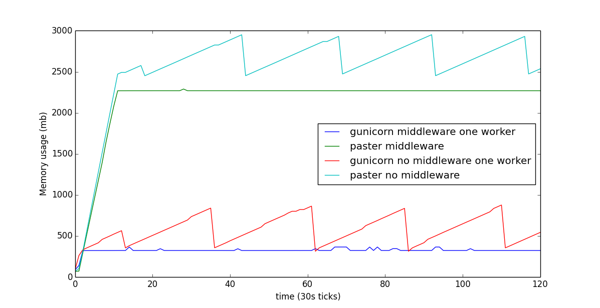

1st June 2015
Digging into python memory issues in CKAN with heapy
So we had a report about a memory leak when using the ckan datastore extension, where large queries to the datastore would leak large amounts of memory per request. It wasn't simple to get to the bottom of it, at first I couldn't recreate it the leak at all. The test data I was using was the STAR experiment csv files, which I found when I googled ‘Large example csv files’. The reporter Alice Heaton, had kindly written a script that would recreate the leak. Even with this, I could not recreate the problem, until I upped the number of rows fetched by a factor of ten. I suspect that Alice has more data per column with perhaps large text fields instead of the mainly numeric data of the STAR experiment data I was using.
Once I could reliably recreate the problem, I ended up poking around using heapy, which I've used previously to track down similar problems and inserted some code to setup heapy and an ipdb breakpoint.
from guppy import hpy
hp = hpy()
heap = hp.heap()
strings = heap[0]
import ipdb; ipdb.set_trace()
before the controller returns the result from the api.
There are some tutorials hanging around for heapy, so I won't repeat the detail, but It looked like the previous responses were hanging around in memory and they were the root cause of the problem.
You can see in the cumulative column that responses account for 71% of the total memory usage.
ipdb> heap.byrcs
Partition of a set of 343689 objects. Total size = 266893568 bytes.
Index Count % Size % Cumulative % Referrers by Kind (class / dict of class)
0 19 0 190780624 71 190780624 71 dict of pylons.controllers.util.Response
1 11 0 21199320 8 211979944 79 dict of pylons.controllers.util.Response, list
2 107194 31 10007816 4 221987760 83 types.CodeType
3 41823 12 4018400 2 226006160 85 tuple
4 24904 7 3071408 1 229077568 86 function
5 9287 3 2350432 1 231428000 87 dict of module
6 6440 2 2324560 1 233752560 88 function, tuple
7 7144 2 2229040 1 235981600 88 type
8 15536 5 1949840 1 237931440 89 dict of type
9 19440 6 1858816 1 239790256 90 dict (no owner)
Partition of a set of 343689 objects. Total size = 266892800 bytes.
Index Count % Size % Cumulative % Kind (class / dict of class)
0 137776 40 225205640 84 225205640 84 str
1 83479 24 7054200 3 232259840 87 tuple
2 8486 2 4350608 2 236610448 89 dict (no owner)
3 18988 6 2430464 1 239040912 90 types.CodeType
4 19980 6 2397600 1 241438512 90 function
5 842 0 2387696 1 243826208 91 dict of module
6 2190 1 1984280 1 245810488 92 type
7 2190 1 1815888 1 247626376 93 dict of type
8 9956 3 1585184 1 249211560 93 list
9 2563 1 1509984 1 250721544 94 unicode
By inspecting those response strings using byid I could see that specifically the response strings are the problem and from the output below it was clear that the response strings were consuming (in my case) 90 odd percent of the memory that was currently in use by all strings. but I didn't really have a good idea as to why they were not getting garbage collected.
ipdb> heap[0].byid
Set of 151666 <str> objects. Total size = 226687040 bytes.
Index Size % Cumulative % Representation (limited)
0 21196016 9.4 21196016 9.4 '{"help": "ht...l": 2173762}}'
1 21196016 9.4 42392032 18.7 '{"help": "ht...l": 2173762}}'
2 21196016 9.4 63588048 28.1 '{"help": "ht...l": 2173762}}'
3 21196016 9.4 84784064 37.4 '{"help": "ht...l": 2173762}}'
4 21196016 9.4 105980080 46.8 '{"help": "ht...l": 2173762}}'
5 21196016 9.4 127176096 56.1 '{"help": "ht...l": 2173762}}'
6 21196016 9.4 148372112 65.5 '{"help": "ht...l": 2173762}}'
7 21196016 9.4 169568128 74.8 '{"help": "ht...l": 2173762}}'
8 21196016 9.4 190764144 84.2 '{"help": "ht...l": 2173762}}'
9 21196016 9.4 211960160 93.5 '{"help": "ht...l": 2173762}}'
I then tried to find what was referencing the strings, perhaps we were holding an extra reference to the request object some where in ckan. Below is the shortest paths of references that heapy can find for the above strings.
ipdb> pprint([strings.byid[x].shpaths for x in range(0,10)])
[ 0: hpy().Root.i0_modules['routes'].__dict__['_RequestConfig'].__dict__['_RequestConfig__shared_state'].??[<weakref...x4e56250>]['environ']['pylons.controller'].__dict__['_py_object'].__dict__['response'].__dict__['_body'],
0: hpy().Root.i0_modules['routes'].__dict__['_RequestConfig'].__dict__['_RequestConfig__shared_state'].??[<weakref...x4e56e50>]['environ']['pylons.controller'].__dict__['_py_object'].__dict__['response'].__dict__['_body'],
0: hpy().Root.i0_modules['routes'].__dict__['_RequestConfig'].__dict__['_RequestConfig__shared_state'].??[<weakref...x4e565f0>]['environ']['pylons.controller'].__dict__['_py_object'].__dict__['response'].__dict__['_body'],
0: hpy().Root.i0_modules['routes'].__dict__['_RequestConfig'].__dict__['_RequestConfig__shared_state'].??[<weakref...x4ce2430>]['environ']['pylons.controller'].__dict__['_py_object'].__dict__['response'].__dict__['_body'],
0: hpy().Root.i0_modules['routes'].__dict__['_RequestConfig'].__dict__['_RequestConfig__shared_state'].??[<weakref...x5433ab0>]['environ']['pylons.controller'].__dict__['_py_object'].__dict__['response'].__dict__['_body'],
0: hpy().Root.t139785342744320_c_traceobj.__self__.__dict__['curframe'].f_locals['result'][0]
1: hpy().Root.t139785342744320_c_traceobj.__self__.__dict__['curframe_locals']['result'][0]
2: hpy().Root.t139785342744320_c_traceobj.im_self.__dict__['curframe'].f_locals['result'][0]
3: hpy().Root.t139785342744320_c_traceobj.im_self.__dict__['curframe_locals']['result'][0],
0: hpy().Root.i0_modules['routes'].__dict__['_RequestConfig'].__dict__['_RequestConfig__shared_state'].??[<weakref...x55288f0>]['environ']['pylons.controller'].__dict__['_py_object'].__dict__['response'].__dict__['_body'],
0: hpy().Root.i0_modules['routes'].__dict__['_RequestConfig'].__dict__['_RequestConfig__shared_state'].??[<weakref...x4ce28d0>]['environ']['pylons.controller'].__dict__['_py_object'].__dict__['response'].__dict__['_body'],
0: hpy().Root.i0_modules['routes'].__dict__['_RequestConfig'].__dict__['_RequestConfig__shared_state'].??[<weakref...x4ce21f0>]['environ']['pylons.controller'].__dict__['_py_object'].__dict__['response'].__dict__['_body'],
0: hpy().Root.i0_modules['routes'].__dict__['_RequestConfig'].__dict__['_RequestConfig__shared_state'].??[<weakref...x54339b0>]['environ']['pylons.controller'].__dict__['_py_object'].__dict__['response'].__dict__['_body']
So the "_RequestConfig__shared_state'].??[ < weakref...x4e56250>" in suggested that these objects should of been cleaned up once there was no longer a reference to them, a manual gc.collect() didn't seem to do anything and inspecting the RequestConfig shared_state showed it to be a thread.local object.
Using .rp shows a tree of references, so in this case, the str is contained in a dict of pylons.controllers.util.Response and that's contained in 3, dict of pylons.util.PylonsContext and so on and so forth
ipdb> strings.byid[0].rp
Reference Pattern by <[dict of] class>.
0: _ --- [-] 1 <id 0x7f21a9792010>: 0x7f21a9792010
1: a [-] 1 dict of pylons.controllers.util.Response: 0x7f224a002550
2: aa ---- [-] 1 pylons.controllers.util.Response: 0x7f224a002550
3: a3 [-] 1 dict of pylons.util.PylonsContext: 0x7f224a002790
4: a4 ------ [-] 1 pylons.util.PylonsContext: 0x7f224a002790
5: a5 [-] 1 dict of pylons.util.AttribSafeContextObj: 0x7f224a002ad0
6: a6 -------- [-] 1 pylons.util.AttribSafeContextObj: 0x7f224a002ad0
7: a7 [^ 3] 1 dict of pylons.util.PylonsContext: 0x7f224a002790
8: a4b ------ [-] 1 dict of ckan.controllers.api.ApiController: 0x7f224a002c10
9: a4ba [-] 1 ckan.controllers.api.ApiController: 0x7f224a002c10
<Type e.g. '_.more' for more.>
ipdb> strings.byid[0].rp.more
10: a4baa ------ [+] 1 dict (no owner): 0x7f222405ef30*50
11: a4bab [+] 1 types.MethodType: <ckan.controllers.api.ApiController ...
At this point, I was moaning about my lack of progress with this problem on #ckan on freenode So I wanted to see if what we have in memory is exactly the responses that we requested (or was it copying one request over and over? etc) I ended up tweaking the script a bit and removing the total from the result dict returned by datastore_search
import json
import urllib
import urllib2
i = 0
while True:
request_params = {
'resource_id': 'blah',
'offset': 0,
'limit': 100000 + i
}
request = urllib2.Request('http://localhost:5000/api/action/datastore_search'
response = urllib2.urlopen(request, urllib.quote(json.dumps(request_params)))
str = response.read()
print len(str)
print str[-100:]
response.close()
i += 1
Not exactly the best code I've ever written, but it did mean that when we inspected using .byid, the output would look something like
ipdb> strings.byid
Set of 137776 <str> objects. Total size = 225205640 bytes.
Index Size % Cumulative % Representation (limited)
0 21198840 9.4 21198840 9.4 '{"help": "ht...it": 100013}}'
1 21198632 9.4 42397472 18.8 '{"help": "ht...it": 100012}}'
2 21198424 9.4 63595896 28.2 '{"help": "ht...it": 100011}}'
3 21198200 9.4 84794096 37.7 '{"help": "ht...it": 100010}}'
4 21197976 9.4 105992072 47.1 '{"help": "ht...it": 100009}}'
5 21197768 9.4 127189840 56.5 '{"help": "ht...it": 100008}}'
6 21197552 9.4 148387392 65.9 '{"help": "ht...it": 100007}}'
7 21197336 9.4 169584728 75.3 '{"help": "ht...it": 100006}}'
8 21197120 9.4 190781848 84.7 '{"help": "ht...it": 100005}}'
9 21196896 9.4 211978744 94.1 '{"help": "ht...it": 100004}}'
<137766 more rows. Type e.g. '_.more' to view.>
This way, I could directly see which of the requests made are in memory, it was clear that we were dealing with the old requests being kept around in memory. I also took a look at the next couple of strings hanging around.
ipdb> strings.byid.more
Index Size % Cumulative % Representation (limited)
10 77528 0.0 212056272 94.2 '============...elease.\n\n\n'
11 30712 0.0 212086984 94.2 'Provide a re...n\n\n '
12 22352 0.0 212109336 94.2 '(?<=\\()(\\*...ng |zero\\? )'
13 18016 0.0 212127352 94.2 'Return a new....\n\n '
14 13656 0.0 212141008 94.2 '\n.. dialect...stgreSQL.\n\n'
15 12480 0.0 212153488 94.2 'subprocess -...cess.Popen.\n'
16 12088 0.0 212165576 94.2 "Create a new...k'``.\n\n "
17 11088 0.0 212176664 94.2 'Create a SQL....\n\n '
18 10904 0.0 212187568 94.2 '\n Co....\n\n '
19 10504 0.0 212198072 94.2 '\n Format...output.\n '
<137756 more rows. Type e.g. '_.more' to view.>
At this point, the first requests we made no longer appear in memory, the requests for 100000-100003 don't appear to be in memory.
So by doing some stepping through each request and stopping before the controller returned the response each time, we can see that it maintains a maximum of 10 response strings in memory and the older requests get shuffled off
ipdb> c
2015-01-15 17:54:57,892 INFO [ckan.lib.base] /api/action/datastore_search render time 33.155 seconds
> /home/joe/projects/json_datastore/src/ckan/ckan/controllers/api.py(82)__call__()
81 import ipdb; ipdb.set_trace()
---> 82 log.debug('mem {0}'.format(result[0][-20]))
83
ipdb> strings.byid
Set of 151739 <str> objects. Total size = 226701936 bytes.
Index Size % Cumulative % Representation (limited)
0 21199056 9.4 21199056 9.4 '{"help": "ht...it": 100014}}'
1 21198840 9.4 42397896 18.7 '{"help": "ht...it": 100013}}'
2 21198632 9.4 63596528 28.1 '{"help": "ht...it": 100012}}'
3 21198424 9.4 84794952 37.4 '{"help": "ht...it": 100011}}'
4 21198200 9.4 105993152 46.8 '{"help": "ht...it": 100010}}'
5 21197976 9.4 127191128 56.1 '{"help": "ht...it": 100009}}'
6 21197768 9.4 148388896 65.5 '{"help": "ht...it": 100008}}'
7 21197552 9.4 169586448 74.8 '{"help": "ht...it": 100007}}'
8 21197336 9.4 190783784 84.2 '{"help": "ht...it": 100006}}'
9 21197120 9.4 211980904 93.5 '{"help": "ht...it": 100005}}'
<151729 more rows. Type e.g. '_.more' to view.>
100004 has been wiped off. At this point after some discussion on irc, we thought it might be the fact that we're in debug mode, and it's just retaining the last 10 responses and their debugging information. but the problem remained when I set “debug = false” in my ckan development.ini
The thing is ten is far too perfect a number, we humans deal with numbers in batches of ten, if this was a random occurence, it was unlikely that there would just happen to be ten requests hanging around. It was more likely that the ten requests hanging around were the result of some config setting somewhere, where the default was ten.
I pieced together the weakref, thread.local stuff with http://pythonpaste.org/paste-httpserver-threadpool.html and noticed that the default number of threads for the paste http server is 10. I then tested by changing the threadpool_workers=n in my ckan development.ini, and each time it matched the number of strings that showed up in heap[0].byid.
The other thing to notice is that if I made 10 new requests to api endpoints that return a much smaller response
Set of 151950 <str> objects. Total size = 78397616 bytes.
Index Size % Cumulative % Representation (limited)
0 21199280 27.0 21199280 27.0 '{"help": "ht...it": 100015}}'
1 21199056 27.0 42398336 54.1 '{"help": "ht...it": 100014}}'
2 21198840 27.0 63597176 81.1 '{"help": "ht...it": 100013}}'
3 77528 0.1 63674704 81.2 '============...elease.\n\n\n'
4 30712 0.0 63705416 81.3 'Provide a re...n\n\n '
5 22352 0.0 63727768 81.3 '(?<=\\()(\\*...ng |zero\\? )'
6 18016 0.0 63745784 81.3 'Return a new....\n\n '
7 13656 0.0 63759440 81.3 '\n.. dialect...stgreSQL.\n\n'
8 12480 0.0 63771920 81.3 'subprocess -...cess.Popen.\n'
9 12088 0.0 63784008 81.4 "Create a new...k'``.\n\n "
<151940 more rows. Type e.g. '_.more' to view.>
ipdb> strings.byid.more
Index Size % Cumulative % Representation (limited)
10 11088 0.0 63795096 81.4 'Create a SQL....\n\n '
11 10904 0.0 63806000 81.4 '\n Co....\n\n '
12 10584 0.0 63816584 81.4 '{"help": "ht...facets": {}}}' (the smaller api responses)
13 10584 0.0 63827168 81.4 '{"help": "ht...facets": {}}}'
14 10584 0.0 63837752 81.4 '{"help": "ht...facets": {}}}'
15 10584 0.0 63848336 81.4 '{"help": "ht...facets": {}}}'
16 10584 0.0 63858920 81.5 '{"help": "ht...facets": {}}}'
17 10584 0.0 63869504 81.5 '{"help": "ht...facets": {}}}'
18 10504 0.0 63880008 81.5 '\n Format...output.\n '
19 9168 0.0 63889176 81.5 'Represent a ...ents.\n\n '
<151930 more rows. Type e.g. '_.more' to view.>
you'll see the total size has dropped from 226701936 bytes to 78397616 bytes. But the entire time that I had been debugging, I had also been running
$ watch "cat /proc/`pgrep paster`/status"
...
VmPeak: 3497708 kB
VmSize: 3497708 kB
...
Which still reports the memory usage the same as when the larger requests were still in memory. This is apparently just the way python works (see https://groups.google.com/forum/#!topic/celery-users/jVc3I3kPtlw). If you've just made a response that took up 500mb of memory, it stands to reason that you might have to do the same again quite soon, so python will hang onto the (virtual) memory. But it's not ‘leaked’
http://pylons-webframework.readthedocs.org/en/latest/controllers.html#special-methods, The next step was to investigate whether it's ok to clear out the string in something like the after() method of the controller. I ended up creating some pylons specific cleanup middleware (see https://github.com/ckan/ckan/pull/2262)
Once the response string has been served, this middleware replaces the response string with a dummy one, so the original response can be garbage collected. This was lifted from Registering Cleanup Code — mod_wsgi 4.7.0 documentation.
So I did a comparison of with and without this enabled. Everyone likes graphs right?
Notably, the memory usage still grows with this enabled, but is a bit more stable. I also did some examining of the memory and this memory has been returned to python's free lists but has not been released by the python process (see Why doesn't Python release the memory when I delete a large object? ). So we'll still use up as much memory as there are threads
So the other way around it is to do something like use gunicorn + gevent, although this isn't a fair direct comparison as this is only using one worker process, but I mainly suggest this as you can set worker processes to restart after serving a maximum number of requests (see Settings — Gunicorn 20.0.4 documentation), which would release any memory that the process has been allocated but is not using.
Finally it was noted that we probably shouldn't be building up the entire response in memory before returning it this is because we're using json.dumps for the response string. It would be better if we had an iterator of some form to stream the response back.
If you want to help fix it, take a look at Streaming/chunked API (and others) response · Issue #128 · ckan/ideas-and-roadmap · GitHub
Next time I look into a python memory issue, I'd like to try meliae as suggested by Ian Ward or some other interesting tools. Anyway that was some fun sleuthing.
heapy docs
- heapy thesis
- How to use guppy/heapy for tracking down memory usage
- Archive.org snapshot of Fragmentation of the Heap Memory — Haypo's Notes 1.0 documentation
- c++ - What is memory fragmentation? - Stack Overflow
- Diagnosing Memory “Leaks” in Python - Chase Seibert Blog
- Archive.org snapshot of Python and memory fragmentation - ForTheScience.org
weak references
- 8.11. weakref — Weak references — Python 2.7.17 documentation
- weakref – Garbage-collectable references to objects - Python Module of the Week
pylons docs
- Pylons Execution Analysis — Pylons Framework 1.0.2 documentation
- The Paste HTTP Server Thread Pool — Paste 1.7.5.1 documentation
Meta
- Written - 1st June 2015
- Updated - 21th January 2020